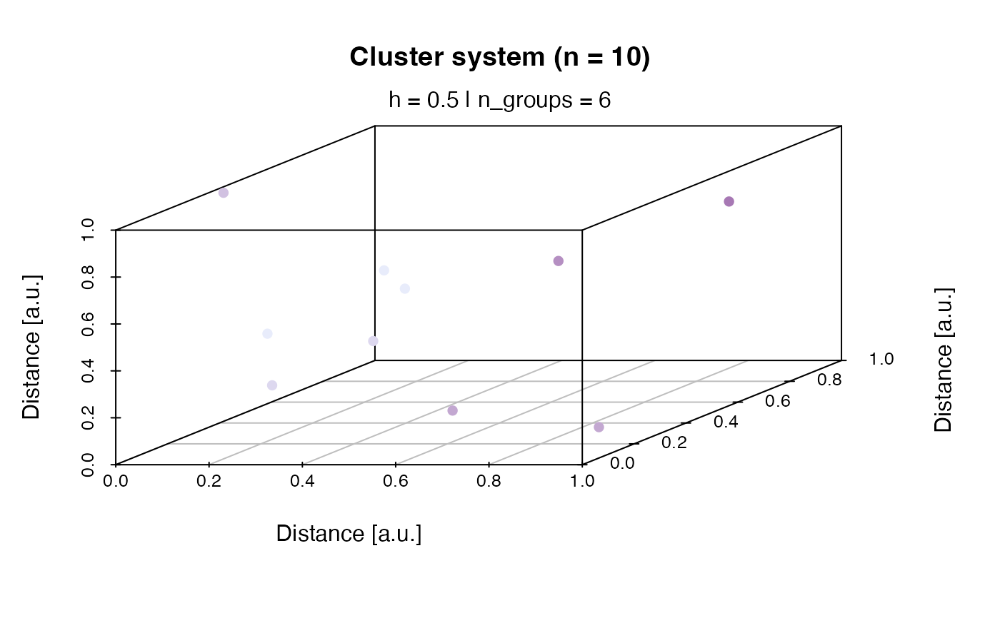

In order to allow interaction of an spatial a correlation clusters in RLumCarlo, first a dosimetric system needs to be created in a three-dimensional space, which is the purpose of this function.
create_ClusterSystem(n = 100, h = 0.5, plot = FALSE, ...)
| n | numeric (with default): number of clusters to be created in an arbitrary 3-dimensional cube. x, y, z distances range between 0 and 1. |
|---|---|
| h | numeric (with default): numeric scalar the cut the cluster tree using stats::cutree. The number must range between 0 and 1. |
| plot | logical (with default): enables/disables plot output |
| ... | further arguments to be passed to the plot output |
The function returns a list of class RLumCarlo_clusters consisting
of numeric vector of cluster groups and a matrix of the cluster positions
in the arbitrary space. If plot = TRUE the system is displayed using
scatterplot3d::scatterplot3d
0.1.0
Sebastian Kreutzer, Geography & Earth Sciences, Aberystwyth University (United Kingdom)
Kreutzer, S., 2020. create_ClusterSystem(): Create dosimetric cluster system. Function version 0.1.0. In: Friedrich, J., Kreutzer, S., Pagonis, V., Schmidt, C., 2020. RLumCarlo: Monte-Carlo Methods for Simulating Luminescence Phenomena. R package version 0.1.7. https://CRAN.R-project.org/package=RLumCarlo
create_ClusterSystem(n = 10, plot = TRUE)#> $cl_groups #> [1] 1 2 3 4 5 3 4 3 2 6 #> #> $m #> x y z #> [1,] 0.080750138 0.87460066 0.28989230 #> [2,] 0.834333037 0.17494063 0.67838043 #> [3,] 0.600760886 0.03424133 0.73531960 #> [4,] 0.157208442 0.32038573 0.19595673 #> [5,] 0.007399441 0.40232824 0.98053967 #> [6,] 0.466393497 0.19566983 0.74152153 #> [7,] 0.497777389 0.40353812 0.05144628 #> [8,] 0.289767245 0.06366146 0.53021246 #> [9,] 0.732881987 0.38870131 0.69582388 #> [10,] 0.772521511 0.97554784 0.68855600 #> #> attr(,"class") #> [1] "RLumCarlo_ClusterSystem"